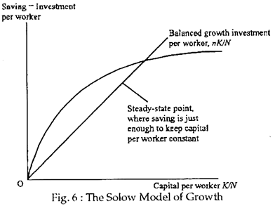
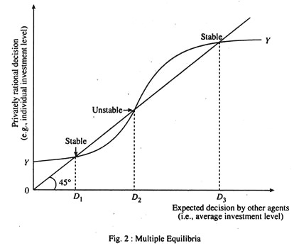

Convergence of sequences
Advanced Macro: Numerical Methods
Life of a computational economist
Life of a computational economist
-
We spend a lot of time waiting for algorithms to converge!
- solution 1: program better
- solution 2: better algorithms
- even better: understand convergence properties (information about the model)
Recursive sequence
Consider a function \(f: R\rightarrow R\) and a recursive sequence \((x_n)\) defined by \(x_0\) and \(x_n = f(x_{n-1})\).
We want to compute a fixed point of \(f\) and study its properties.
Example: growth model
- Solow growth model:
- capital accumulation: \[k_t = (1-\delta)k_{t-1} + i_{t-1}\]
- production: \[y_t = k_t^\alpha\]
- consumption: \[c_t = (1-{\color{red}s})y_t\] \[i_t = s y_t\]
- For a given value of \({\color{red} s}\in\mathbb{R}^{+}\) ( \({\color{red} s}\) is a decision rule) \[k_{t+1} = f(k_t, {\color{red} s})\]
- backward-looking iterations
- Solow hypothesis: saving rate is invariant
- Questions:
- What is the steady-state?
- Can we characterize the transition back the steady-state?
- Characterize the dynamics close to the steady-state?
- next session
- what is the optimal \(s\) ?

Another example: linear new keynesian model
- Basic New Keynesian model (full derivation if curious )
- new philips curve (PC):\[\pi_t = \beta \mathbb{E}\_t \pi_{t+1} + \kappa y_t\]
- dynamic investment-saving equation (IS):\[y_t = \beta \mathbb{E}\_t y_{t+1} - \frac{1}{\sigma}(i_t - \mathbb{E}\_t(\pi_{t+1}) ) - {\color{green} z_t}\]
- interest rate setting (taylor rule): \[i_t = \alpha_{\pi} \pi_t + \alpha_{y} y_t\]
-
Solving the system:
- solution: \(\begin{bmatrix}\pi_t \\\\ y_t \end{bmatrix} = {\color{red} c} z_t\)
-
forward looking:
- take \(\begin{bmatrix}\pi_{t+1} \\\\ y_{t+1} \end{bmatrix} = {\color{red} {c_n}} z_{t+1}\)
- deduce \(\begin{bmatrix}\pi_{t} \\\\ y_{t} \end{bmatrix} = {\color{red} {c_{n+1}}} z_{t}\)
- \(\mathcal{T}: \underbrace{c_{n}}\_{t+1: \; \text{tomorrow}} \rightarrow \underbrace{c_{n+1}}\_{t: \text{today}}\) is the time-iteration operator (a.k.a. Coleman operator)
-
Questions:
- What is the limit to \(c_{t+1} = \mathcal{T} c_n\) ?
- Under wich conditions (on \(\alpha_{\pi}, \alpha_y\)) is it convergent ?
- determinacy conditions
- interpretation: does the central bank manage to control inflation expectations?
Recursive series (2)
- Wait: does a fixed point exist?
- we’re not very concerned by the existence problem here
- we’ll be happy with local conditions (existence, uniqueness) around a solution
- We can assume there is an interval such that \(f([a,b])\subset[a,b]\). Then we know there exists \(x\) in \([a,b]\) such that \(f(x)=x\). But there can be many such points.
Example: growth model with multiple fixed points
- In the growth model, if we change the production function: \(y=k^{\alpha}\) for a nonconvex/nonmonotonic one, we can get multiple fixed points.

Convergence
- How do we characterize behaviour around \(x\) such that \(f(x)=x\)?
- if \(|f^{\prime}(x)|>1\): series is unstable and will not converge to \(x\) except by chance
- if \(|f^{\prime}(x)|<1\): \(x\) is a stable fixed point
- if \(|f^{\prime}(x)|=1\): ??? (look at higher order terms, details ↓)
To get the intution about local convergence assume, you have an initial point \(x_n\) close to the steady state and consider the following expresion:
\(x_{n+1} - x = f(x_n) - f(x) = f^{\prime}(x) (x_n-x) + o( (x_n-x) )\)
If one sets aside the error term (which one can do with full mathematical rigour), the dynamics for very small perturbations are given by:
\(|x_{n+1} - x| = |f^{\prime}(x)| |x_n-x|\)
When \(|f^{\prime}(x)|<1\), the distance to the target decreases at each iteration and we have convergence. When \(|f^{\prime}(x)|>1\) there is local divergence.
What about the case \(|f^{\prime}(x)=1|\)? Many cases are possible. To distinguish between them, one needs to inspect higher order derivatives.
- when \(|f^{\prime}(x)=1|\), \(|f^{\prime\prime}(x)|\neq 0\) the series will convergence, only if \((x_0-x)f^{\prime\prime}(x)<0\), i.e. starting from one side of the fixed point. The steady-state is not stable.
- When \(|f^{\prime}(x)=1|\), \(|f^{\prime\prime}(x)| = 0\), \(|f^{\prime \prime\prime}(x)|\neq 0\) the series will converge, only if \(f^{\prime}(x)(f^{\prime\prime\prime}(x))<1\)
In general, there is stability only if the function \(f\) is crossing the 45 degrees line (when \(f^ {\prime}(x)=1)\), or the -45 degrees line (when \(f^ {\prime}(x)=1\))
Mathematically, this involves, that: - the first non-zero coefficient \(f^{k}(x)\) with \(k>1\) has odd order (\(k\) odd) - it has the right sign
[TODO: add graph]
Change the problem
- Sometimes, we are interested in tweaking the convergence speed:
\[x_{n+1} = (1-\lambda) x_n + \lambda f(x_n)\]
- \(\lambda\) is the learning rate:
- \(\lambda>1\): acceleration
- \(\lambda<1\): dampening
- We can also replace the function by another one \(g\) such that \(g(x)=x\iff f(x)=x\), for instance:
\[g(x)=x-\frac{f(x)-x}{f^{\prime}(x)-1}\]
Dynamics around a stable point
- We can write successive approximation errors:
\[|x_t - x_{t-1}| = | f(x_{t-1}) - f(x_{t-2})| \]
\[|x_t - x_{t-1}| \sim |f^{\prime}(x_{t-1})| |x_{t-1} - x_{t-2}| \]
Ratio of successive approximation errors \[\lambda_t = \frac{ |x_{t} - x_{t-1}| } { |x_{t-1} - x_{t-2}|}\]
\(\lambda_t \rightarrow | f^{\prime}(\overline{x}) |\)
Dynamics around a stable point (2)
How do we derive an error bound? Suppose that we have \(\overline{\lambda}>|f^{\prime}(x_k)|\) for all \(k\geq k_0\):
\[|x_t - x| \leq |x_t - x_{t+1}| + |x_{t+1} - x_{t+2}| + |x_{t+2} - x_{t+3}| + ... \]
\[|x_t - x| \leq |x_t - x_{t+1}| + |f(x_{t}) - f(x_{t+1})| + |f(x_{t+1}) - f(x_{t+2})| + ... \]
\[|x_t - x| \leq |x_t - x_{t+1}| + \overline{\lambda} |x_t - x_{t+1}| + \overline{\lambda}^2 |x_t - x_{t+1}| + ... \]
\[|x_t - x| \leq \frac{1} {1-\overline{\lambda}} | x_t - x_{t+1} |\]
How do we improve convergence ?
\[\frac{|x_{t-1} - x_{t-2}|} {|x_t - x_{t-1}|} \sim |f^{\prime}(x_{t-1})| \]
corresponds to the case of linear convergence (kind of slow).
Aitken’s extrapolation
When convergence is geometric, we have: \[ \lim_{x\rightarrow \infty}\frac{ x_{t+1}-x}{x_t-x} = \lambda \in \mathbb{R}^{\star}\]
Which implies:
\[\frac{ x_{t+1}-x}{x_t-x} \sim \frac{ x_{t}-x}{x_{t-1}-x}\]
Aitken’s extrapolation (2)
Take \(x_{t-1}, x_t\) and \(x_{t+1}\) as given and solve for \(x\):
\[x = \frac{x_{t+1}x_{t-1} - x_{t}^2}{x_{t+1}-2x_{t} + x_{t-1}}\]
or after some reordering
\[x = x_{t-1} - \frac{(x_t-x_{t-1})^2}{x_{t+1}-2 x_t + x_{t-1}}\]
Steffensen’s Method:
- start with a guess \(x_0\), compute \(x_1=f(x_0)\) and \(x_2=f(x_1)\)
- use Aitken’s guess for \(x^{\star}\). If required tolerance is met, stop.
- otherwise, set \(x_0 = x^{\star}\) and go back to step 1.
It can be shown that the sequence generated from Steffensen’s method converges quadratically, that is
\(\lim_{t\rightarrow\infty} \frac{x_{t+1}-x_t}{(x_t-x_{t-1})^2} \leq M \in \mathbb{R}^{\star}\)
Convergence speed
Rate of convergence of series \(x_t\) towards \(x^{\star}\) is:
- linear: \[{\lim}\_{t\rightarrow\infty} \frac{|x_{t+1}-x^{\star}|}{|x_{t}-x^{\star}|} = \mu \in R^+\]
- superlinear: \[{\lim}\_{t\rightarrow\infty} \frac{|x_{t+1}-x^{\star}|}{|x_{t}-x^{\star}|} = 0\]
- quadratic: \[{\lim}\_{t\rightarrow\infty} \frac{|x_{t+1}-x^{\star}|}{|x_{t}-x^{\star}|^{\color{red}2}} = \mu \in R^+\]
Convergence speed
Remark: in the case of linear convergence:
\[{\lim}\_{t\rightarrow\infty} \frac{|x\_{t+1}-x\_t|}{|x\_{t}-x\_{t-1}|} = \mu \in R^+ \iff {\lim}\_{t\rightarrow\infty} \frac{|x\_{t+1}-x^{\star}|}{|x\_{t}-x^{\star}|}=\frac{1}{1-\mu}\]
In practice
- Problem:
- Suppose one is trying to find \(x\) solving the model \(G(x)=0\)
- An iterative algorithm provides a function \(f\) defining a recursive series \(x_{t+1}\).
- The best practice consists in monitoring at the same time:
- the success criterion: \[\epsilon_n = |G(x_n)|\]
- have you found the solution?
- the successive approximation errors \[\eta_n = |x_{n+1} - x_n|\]
- are you making progress?
- the ratio of successive approximation errors \[\lambda_n = \frac{\eta_n}{\eta_{n-1}}\]
- what kind of convergence? (if \(|\lambda_n|<1\): OK, otherwise: ❓)
- the success criterion: \[\epsilon_n = |G(x_n)|\]